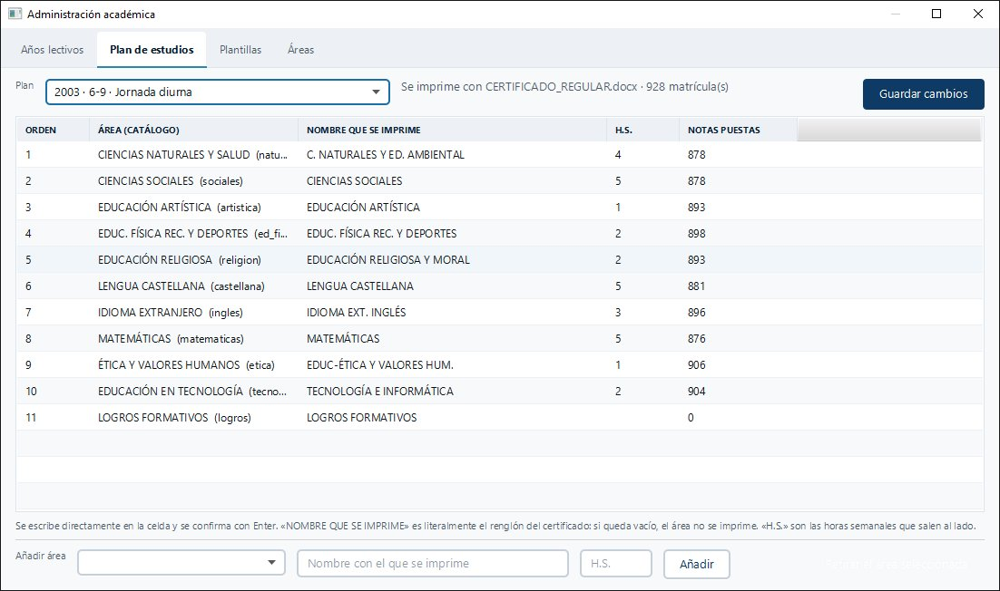
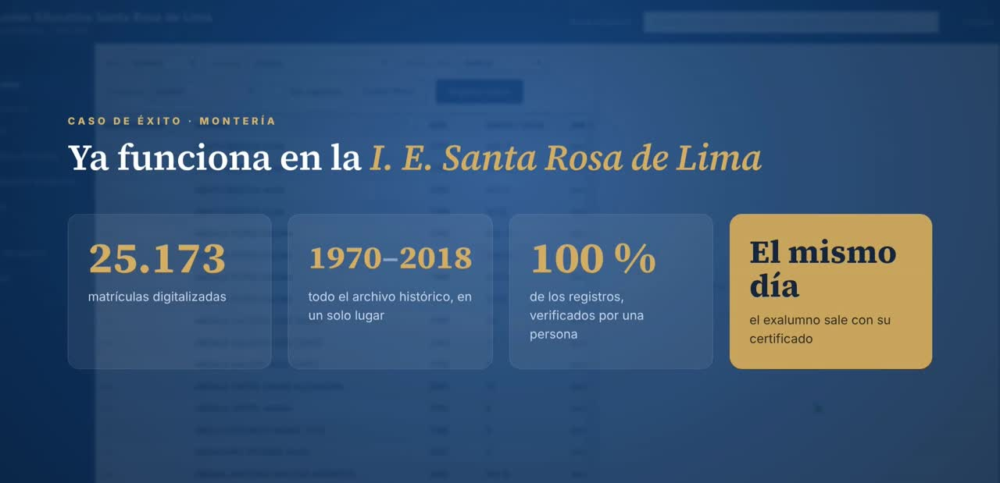

En uso · I. E. Santa Rosa de Lima
CertificaEdu
Programa de escritorio para que la secretaría de un colegio encuentre a cualquier exalumno y expida su certificado de estudio en minutos, desde su archivo histórico.
- Digitalicé el archivo del colegio: 25.173 registros de 12.115 estudiantes, de 1970 a 2018, con lectura asistida por IA y revisión humana.
- Búsqueda en unos 0,2 segundos, sin importar tildes ni el orden de las palabras.
- Certificados en Word desde plantillas, con vista previa y registro de cada emisión.
- Papelera, años lectivos, planes de estudio y respaldo automático en Google Drive.
Java 21Spring BootJavaFXSQLiteHibernateApache POIGoogle Drive APIInstalador MSI